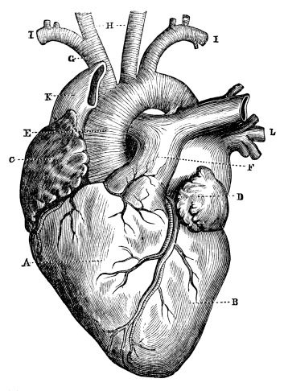

Tatuagem e a medicina!
O coração anatômico é o mais utilizado pelos estudantes de medicina.
Além do coração ser um dos órgãos mais importantes e admirados nessa área, ele pode ter ligação ao amor.
Por isso, ao tatuar, os estudantes levam como significao o amor pela medicina.

Clique para conhecer mais sobre o coração humano
FIM !!!!!